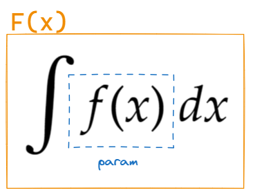

有一段时间不看高数了，回来发现又忘记了一大半。想要完全建立一个框架起来，但又总是迷失在细节之中。
还是慢慢串起手中的珠子，能完成多少算多少吧。
微分学
概念
间断点
第一类间断点：可去间断点和跳跃间断点。特点是函数在该点处的左右极限都存在。
第二类间断点：无穷间断点和振荡间断点。特点是至少有一边的极限不存在。
导数根本定义

技巧
积分学
概念
定积分的本质定义
设f是[a,b]上的有界函数，
对[a,b]的任意分划 D:a=x0<x1<…<xn=b ，
任取 ξi∈[xi−1,xi] 并记Δxi=xi−xi−1 ，
λ=max{Δxi}→0时有和式 λ→0limi=1∑nf(ξi)Δxi ，
记作定积分 ∫abf(x)dx。
现考虑变限积分的情况（以∫axf(t)dt为例）。
设f是[a,b]上的有界函数，
对[a,b]的任意分划 D:a=x0<x1<…<xn=x ，
任取ξi∈[xi−1,xi]并记Δxi=xi−xi−1，
λ=max{Δxi}→0时有和式 λ→0limi=1∑nf(ξi)Δxi ，
记作定积分∫axf(t)dt 。
我们发现定义其它部分（包括和式的呈现形式）都并无不同，差异仅在于分划所在的区间。
最后再考虑λ=max{Δxi}→0的条件：这意味着n→∞ （并不等价，前者是后者的充分条件）。最终归结为，定积分是由数列极限导出的，表现为数列极限求和。上下限只决定分划所在的区间。
变限积分求导
那么，对变限积分的求导何以可能——如果变量甚至只出现在区间上？
不妨再推导一遍变限积分的求导。
求证：
F′(x)=(∫axf(t)dt)′=f(x) 。
证明：
F(x+Δx)−F(x)=∫xx+Δxf(t)dt（定义）
F(x+Δx)−F(x)=f(ξ)Δx（f(x)连续，利用积分中值定理）
（↑积分中值定理的证明见博文原函数、不定积分、定积分关系整理。）
故有 F′(x)=Δx→0limΔxF(x+Δx)−F(x)=Δx→0limf(ξ)=ξ→xlimf(ξ)=f(x)。
这个时候会发现，“沟通了积分和变量的关系”并不能很好地说明积分中值定理最神奇的地方。最有意思的地方在于利用这个定理，我们把区间上的变量挪到了式子中，这得益于函数的连续性所带来的有界性。
Newton-Leibniz公式
设f是[a,b]上的连续函数，F是f在[a,b]上的一个原函数，则 ∫abf(t)dt=F(b)−F(a)。
证明：
记 G(x)=∫axf(t)dt，
由于 G′(x)=F′(x)=f(x)， 恒有G(x)−F(x)=C。
也即， x∈[a,b]时恒有∫axf(t)dt=F(x)+C。
带入特殊值，我们有
⎩⎪⎪⎨⎪⎪⎧∫aaf(t)dt=F(a)+C=0∫abf(t)dt=F(b)+C
两式联立得到∫abf(t)dt=F(b)−F(a)。
有前面的铺垫这个就很好想通，因为看似是两个函数的差，其实是从一个区间中排除另一个区间。
反常积分的敛散性
讨论这一节，首先要把反常积分分为无穷区间和无界函数两种。
无穷区间上的反常积分：
- （→）∫a+∞f(x)dx=b→+∞lim∫abf(x)dx存在，则左侧的反常积分存在。
- （←）∫−∞bf(x)dx=a→−∞lim∫abf(x)dx存在，则左侧的反常积分存在。
- （↔）∫−∞+∞f(x)dx=∫c+∞f(x)dx+∫−∞cf(x)dx，右侧两个反常积分都收敛时左侧的反常积分收敛。
为什么到了这里需要两个反常积分都收敛呢？本质上，反常积分是定积分的推广，我认为这里是说希望在整个被积的区间上都是可积的，不论是取中间的哪一部分。
再看无界函数的反常积分：
- 若b是f(x)的唯一瑕点，则无界函数f(x)的反常积分 ∫abf(x)dx 定义为 ∫abf(x)dx=ϵ→0+lim∫ab−ϵf(x)dx
- 若a是f(x)的唯一瑕点，则无界函数f(x)的反常积分 ∫abf(x)dx 定义为 ∫abf(x)dx=ϵ→0+lim∫a+ϵbf(x)dx
- 若c∈(a,b)是f(x)的唯一瑕点，则无界函数f(x)的反常积分 ∫abf(x)dx定义为 ∫abf(x)dx=∫acf(x)dx+∫cbf(x)dx，右侧两个反常积分都收敛时左侧的反常积分收敛。
总而言之就是挖掉的这个点导致闭区间变成一个或两个开区间，这若干个开区间仍需是可积的。
技巧：不定积分
在写这一块之前我先记录一样东西。

为了看到那个拉长的没有上下标的S时不至于陷入某种空洞的哲学思考，我现在管不定积分号叫这个：求原函数号。
不定积分的积分法有：
- 第一类换元积分法（凑微分法）
- 第二类换元积分法
- 分部积分法
延伸出来还有：
- 有理函数的积分：部分分式分解
- 无理函数的积分：换元
有理函数的积分
当我们讨论 Qn(x)Pm(x)的不定积分时，希望将其拆成几个简单分式的代数和。
由代数学基本定理，n次多项式 Qn(x) 恰有n个根，这n个根或为实数，或为成对出现的共轭复根；由此，Qn 可分解为若干因数，形如(x−a)k (k≥1) 或 (x2+αx+β)k (α2−4β<0,k≥1) 。
在 Qn(x)Pm(x) 中，前者（因式分解得开）可分解为 x−aA1+(x−a)2A2+...+(x−a)kAk；后者（因式分解不开）可分解为 x2+αx+βB1x+C1+(x2+αx+β)2B2x+C2+...+(x2+αx+β)kBkx+Ck 。
但凡事不要先想不开——遇到分母上为二次的情况，建议是先想想能不能使用凑微分法凑成完全平方+余项的情况。
无理函数的积分
思路是化归为有理函数的积分。好的情况下能去掉分式，坏的情况下能使用有理函数的积分进一步处理。
如果被积函数内形式为 ax+b ，可直接对它进行换元；
如果根号下次数较高，尝试将它换成分式的形态，比如书上例题的做法
∫3(x−1)(x+1)21dx=∫x+113x−1x+1dx
然后对这个分式根式进行换元。
“巧妙的求解技巧”：∫1/(x^4+1)dx
这道题我每次都忘记怎么做，关键它的凑法我自己又根本想不出来，暂时先放在这里供着吧。
∫x4+1dx=21∫x4+1x2+1dx−21∫x4+1x2−1dx=21∫x2+x211+x21dx−21∫x2+x211−x21dx=21∫(x−x1)2+(2)2d(x−x1)−21∫(x+x1)2−(2)2d(x+x1)=42arctan2x−x1−82ln∣∣∣∣x+x1+2x+x1−2∣∣∣∣+c
反常积分比阶
掌握两个重要结论：
- 无穷区间的反常积分∫1+∞xpdx ：在p>1时收敛，p≤1时发散
- 无界函数的反常积分 ∫01xpdx ：在0<p<1时收敛，p≥1时发散
TODO：可能需要注意的题型
-
凑定积分定义
-
反常积分概念
-
敛散性
-
敛散性判别：比较法
TODO: 对数列和 xp1（离散情况）以及它的积分的考察
-
区间再现公式
-
华里士公式
他说很重要那就很重要吧。。我也不知道重要在哪里
。。。
好吧我会加油写的！